Are you drowning in information, but starving for knowledge?
Where do you
keep your private remarks like ideas, personal plans, exam preparation notes, gift tips,
how-tos, dreams, business visions, finance strategies, meeting minutes and auto
coaching notes? Loads of documents, sketches and remarks spread
around the file system, cloud, web and Post-it notes? Are you afraid of your knowledge privacy? Are you able to
find particular remarks once you create them? Do you know how are the remarks
mutually related when you browse, read or write them? No?
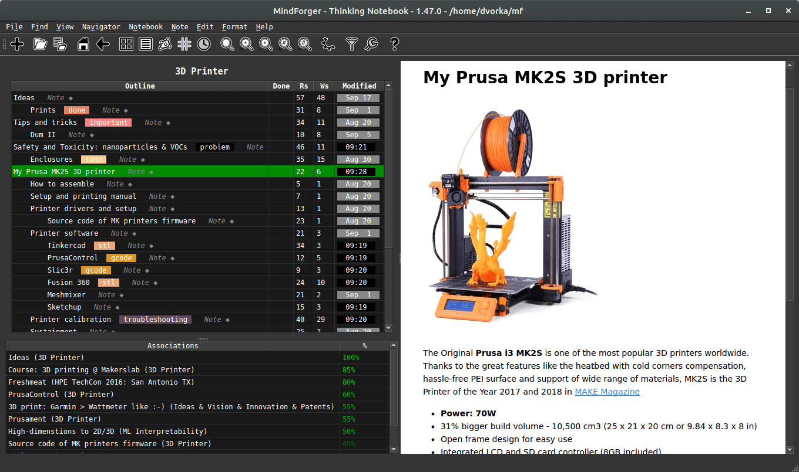
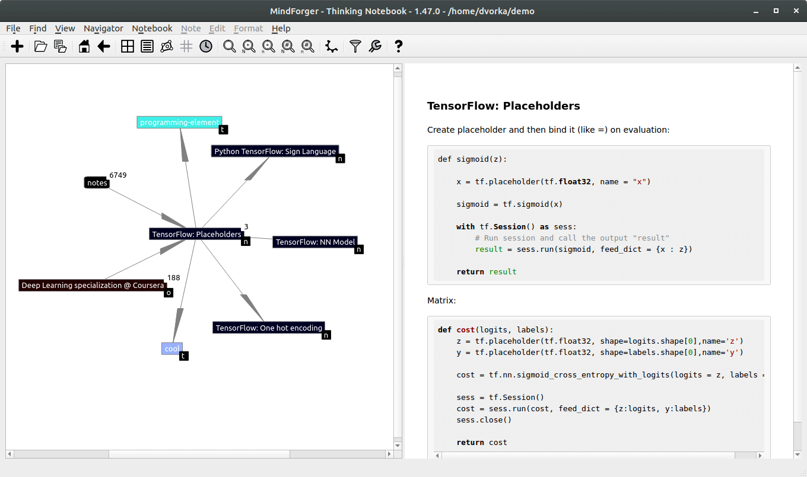
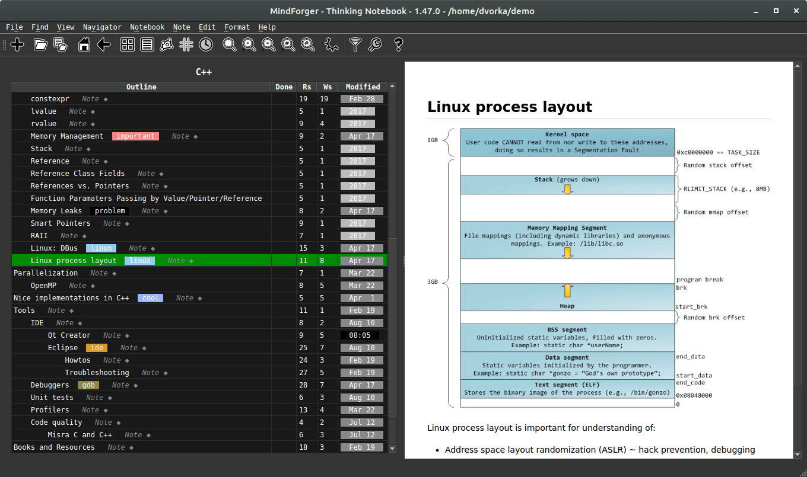
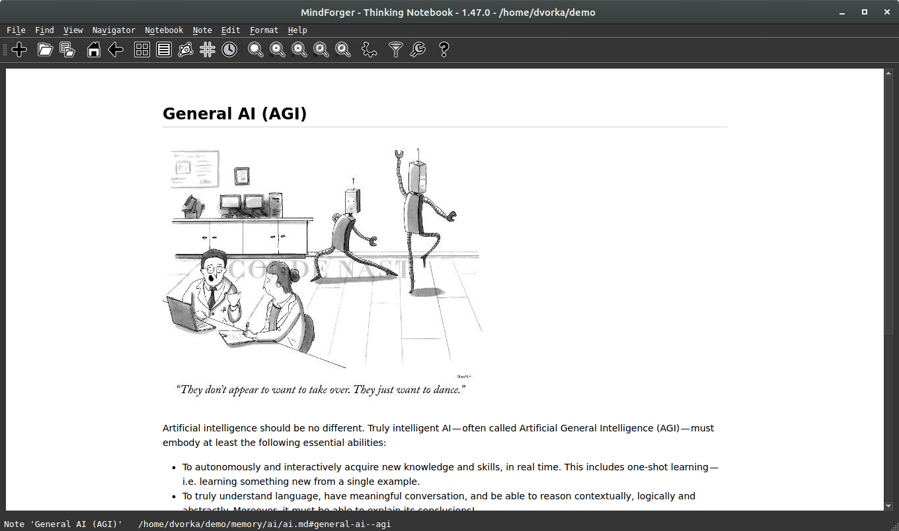
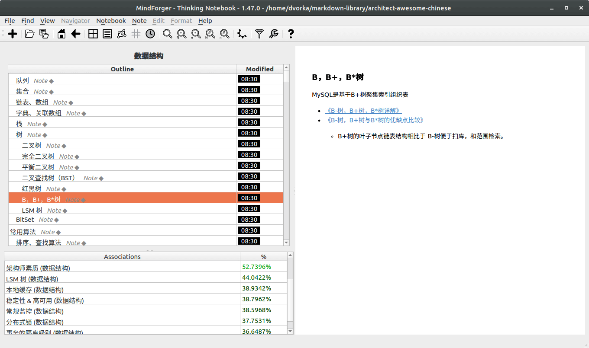
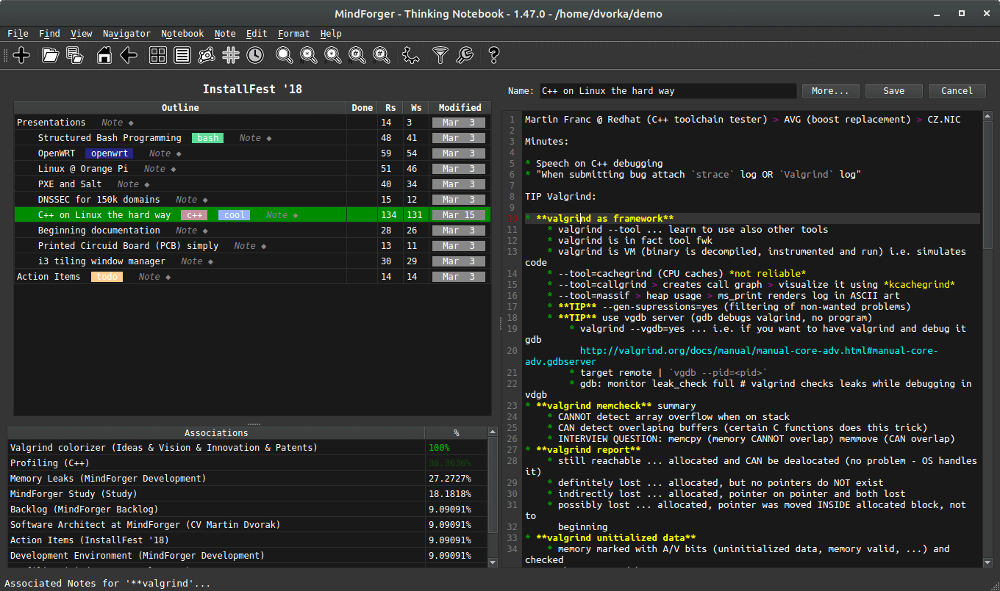
Think as you read
Knowledge graph
Markdown with preview
Hoisting
I18n
Think as you write
MindForger aims to mimic human mind - learning, recalling, recognition,
associations, forgetting - in order
to achieve synergy with your mind to make your searching,
reading and writing more productive.
MindForger ensures that you own your personal data.
It respects privacy and enables security of your knowledge.
MindForger seeks knowledge hidden in your remarks
to enable its mining.
MindForger starts where editors and search
engines end. It thinks as you search, browse, read and write. Once you find
a remark, MindForger brings its associations. As you browse notes and read
them it looks up related relevant knowledge in your notebooks.
If you edit a remark, MindForger brings associations as you write.
It reminds you about existing content related to the text being written.
MindForger is a desktop application for Linux.
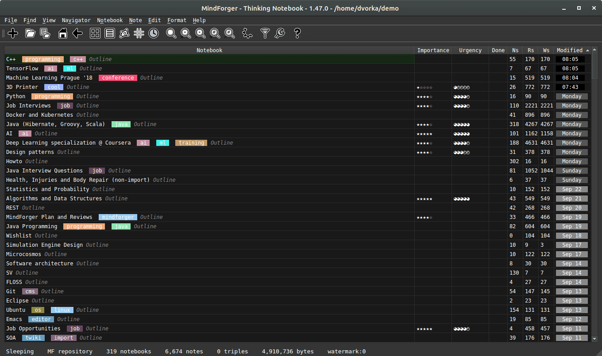
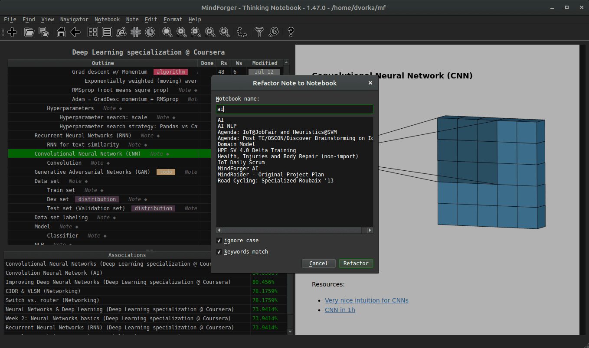
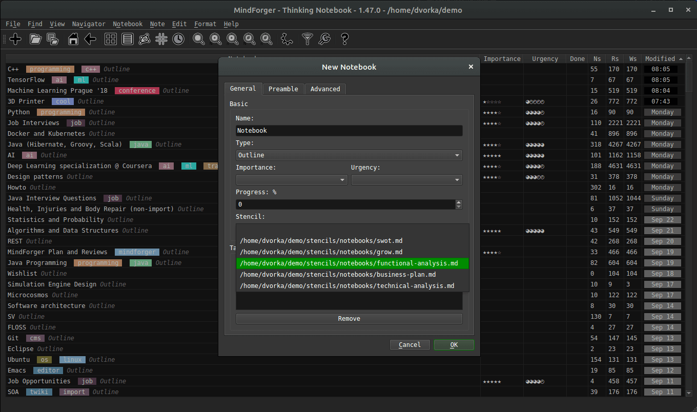


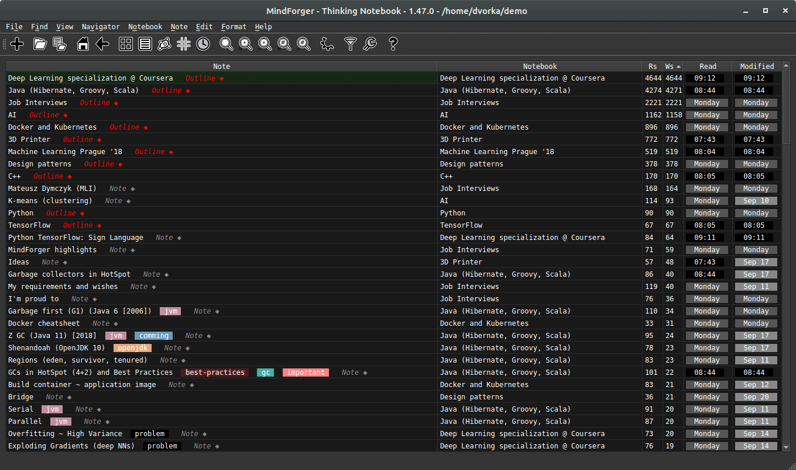
Multiple documents
Refactoring
Stencils
Tag navigator
Math
Recent notes
MindForger provides IDE-style features for notes - they can be easily
cloned,
promoted,
demoted,
moved,
extracted,
refactored
within one or across different Markdown files. MindForger connects conventional
outline editor
features with
emerging technologies to make you more productive.
MindForger brings a basic set of stencils for quick creation of various notebook
types - ranging from (regular) meeting minutes, software analysis and design documents to S.M.A.R.T.E.R. goals
and GROW model templates.
You can easily add your own notebook/note stencils to boost your (organization) performance.
Your data can be easily synchronized
among all
your devices (workstations,
laptops, tablets, mobile phones) in a variety of ways. Use SCM (own Git, private
GitHub or
BitBucket repo) and/or cloud drive (with custom encryption) you trust.
If you need to securely share MindForger repository or Markdown file with
somebody else (colleague, friend, customer), then simply use a secure protocol
(like SSH) and/or remote private SCM repository (like Git) which enables cooperation.
You can easily create compressed archive with your data and store it as backup.
If you are fine with a remote private CMS repository or cloud drive,
then MindForger repository can be backed up incrementally in more than one location.
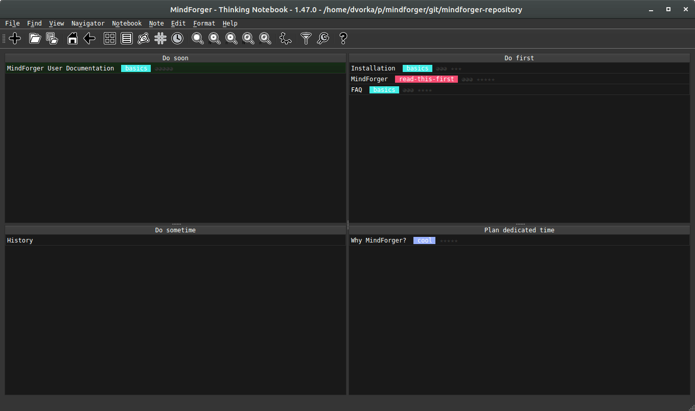

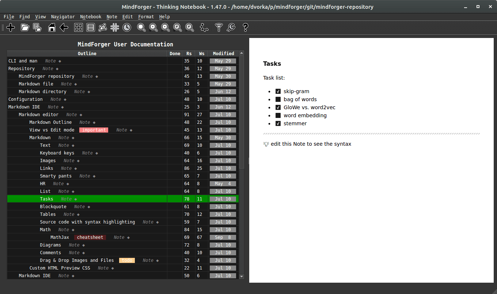
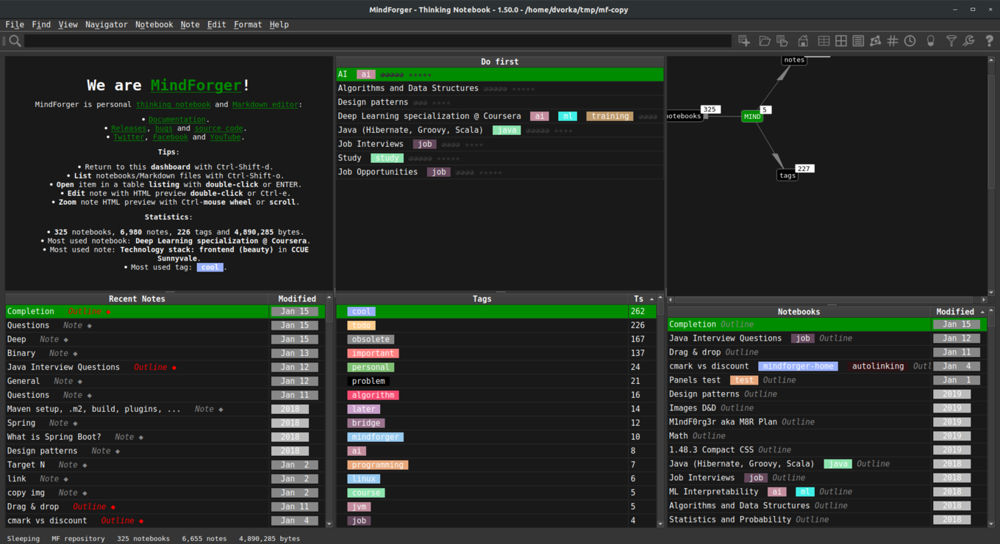
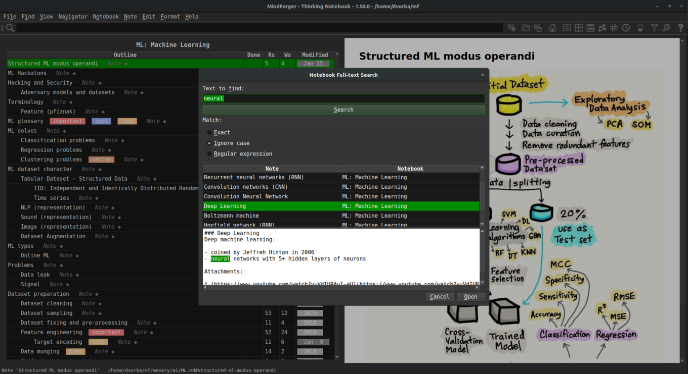
Eisenhower matrix
G.R.O.W. model
Markdown with preview
Free software is primarily a matter of liberty, not price.
You are free to do what you want with your copy of a free software
regardless of how much is paid to obtain the program.
MindForger is licensed under
free software license +
you
don’t pay for downloading and using MindForger.
Even initial MindForger implementation is able to work with relatively big Markdown files
and repositories - 1000s of sections and 100s of files are parsed and indexed instantly and
can be searched, viewed and edited without any problem.
MindForger stores your data locally on your machine. It does
not upload anything anywhere. Neither your data nor anonymized digest is uploaded to the Internet
(cloud, server or service).
MindForger repository can be easily
encrypted using any tool by you e.g.
ecryptfs.
If you want to try MindForger as Markdown editor/IDE, then
check examples below. Simply
clone Git repository and
open it from its root
directory using MindForger:
JavaScript Algorithms
git clone https://github.com/trekhleb/javascript-algorithms.git && cd javascript-algorithms && mindforger .
ProGit
git clone https://github.com/progit/progit && cd progit/en && mindforger .
Pure Bash Bible
git clone https://github.com/dylanaraps/pure-bash-bible.git && cd pure-bash-bible && mindforger .
Check
documentation for more Markdown content examples.
Current MindForger implementation is just an initial imperfect sketch of much broader
vision. It's purpose is to demonstrate viability of thinking notebook idea and to show
possible research directions.
- Bugs and suggestions ... submit bugs, issues, ideas and enhancements.
- Translations ... translate MindForger to your language.
- Platform support ... port MindForger to your favorite OS or distribution.
- Code ... submit pull request or patch with implementation of a feature you missed.
- Research ... consider making your AI/ML, NLP, data mining, ... research on top of (your) documents indexed to MindForger ontology.
- Integration ... how-to or code enabling integration with your (favorite) project.
- Enhancements ... submit performance, efficiency and/or productivity enhancements.
- Documentation ... write a document, blog post or tweet, create YouTube video, ...

 Vision
Vision